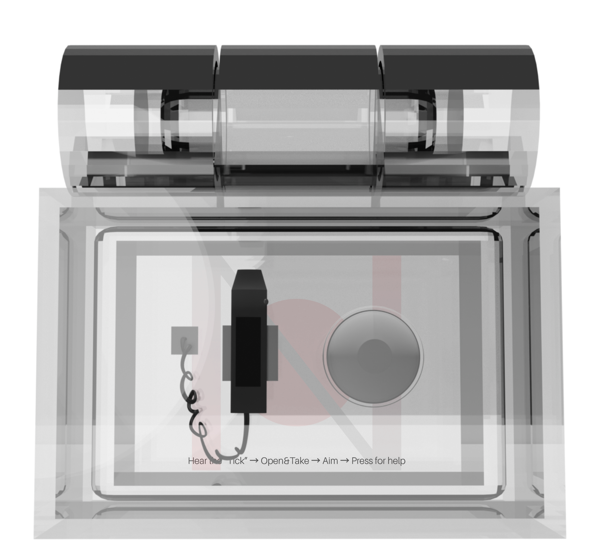
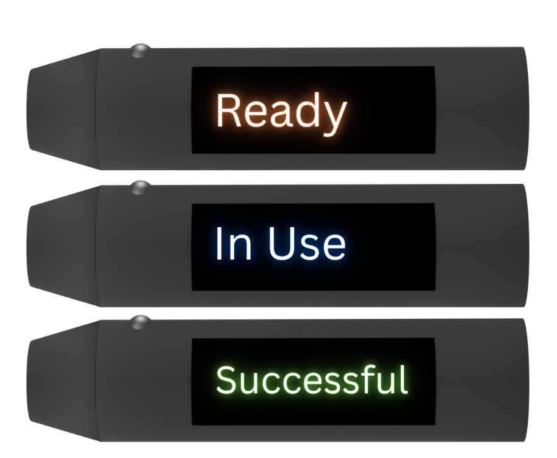
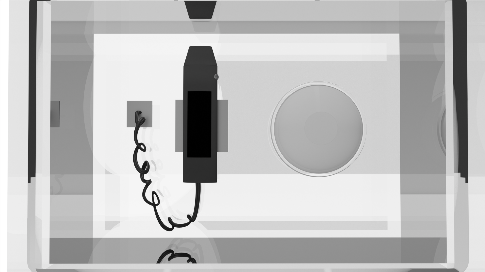
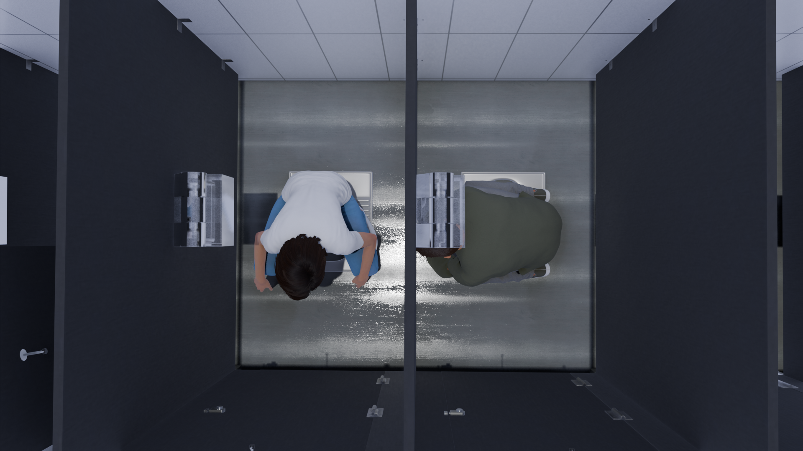
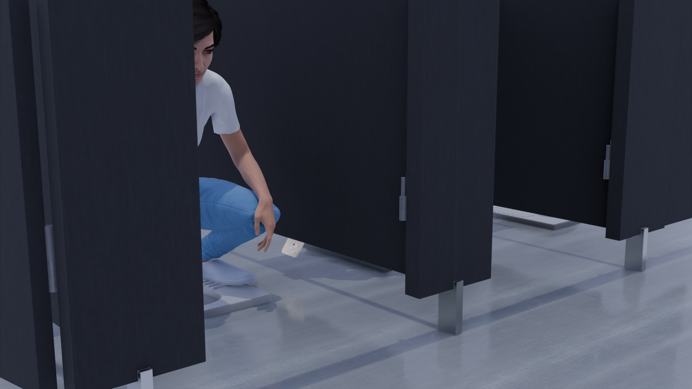
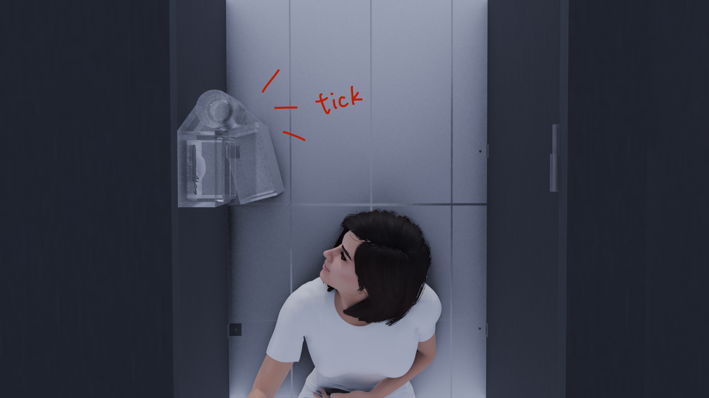
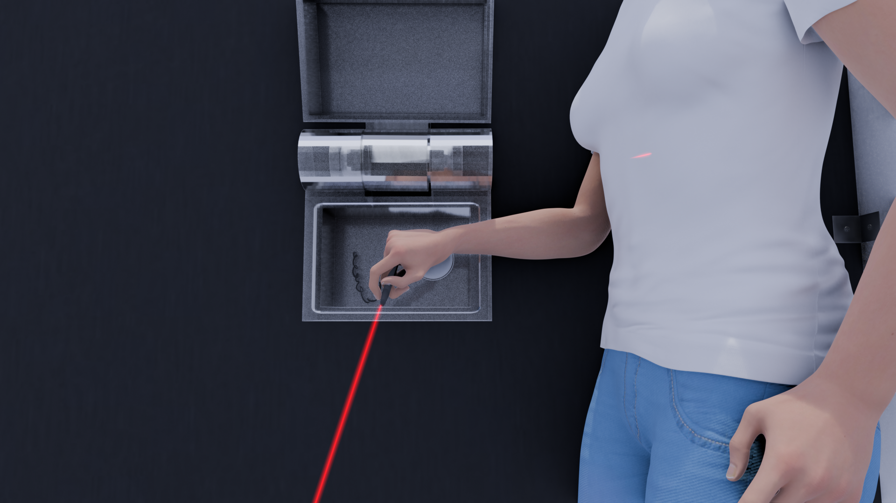
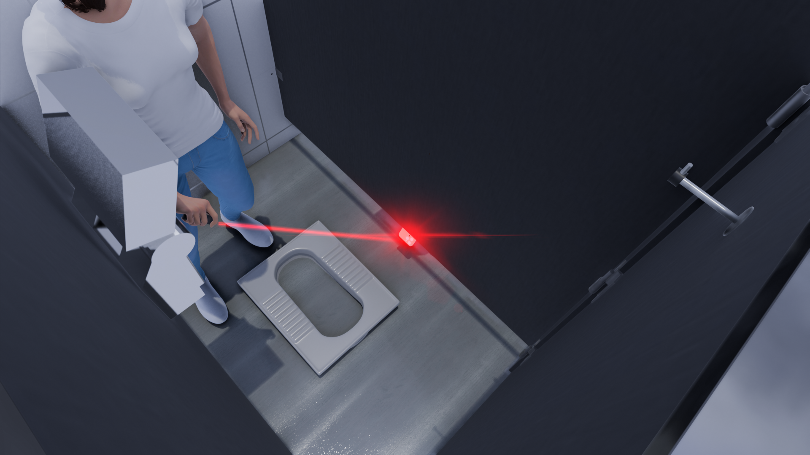
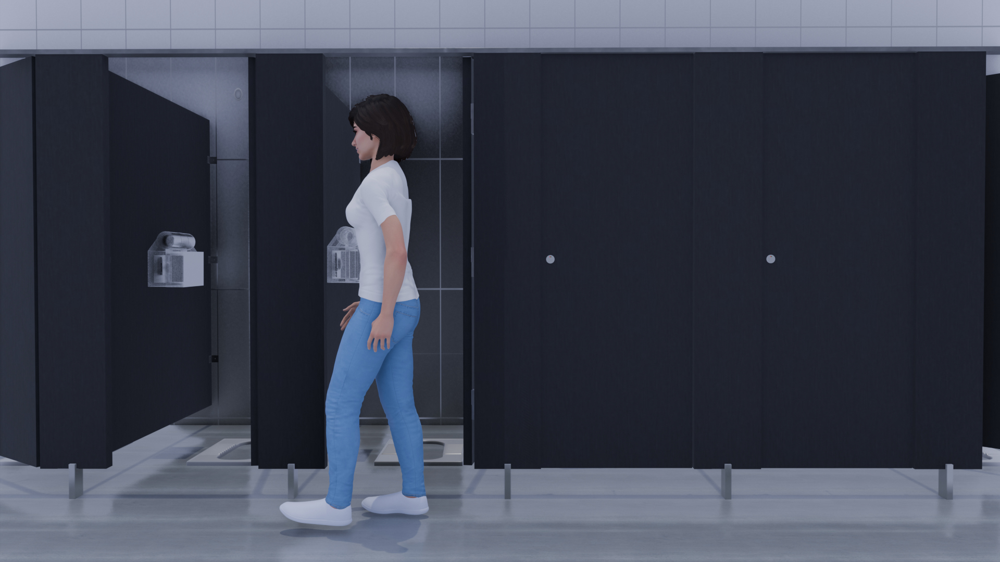
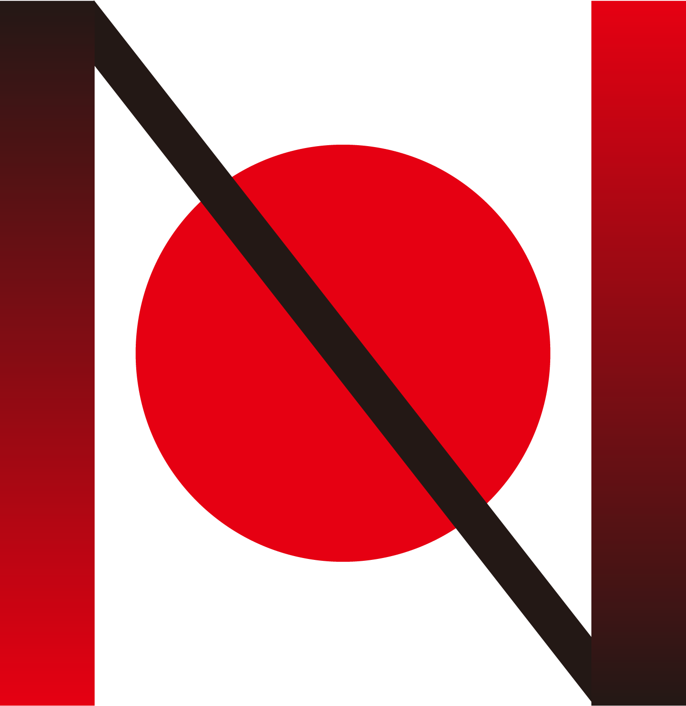

01Auto-lift box

Industrial Design · Interaction Design · Brand Identity
Privacy you can act on — before you’re exposed.
The Question
How might we protect the privacy and safety of people using public restrooms while keeping those spaces accessible and convenient? Hidden-camera (“molka”) crimes fall overwhelmingly on women — in a single year South Korea logged roughly 6,800 illegal-filming cases, 90% of the victims women — yet most responses are reactive or institutional: tougher laws, more cameras watching the cameras, an after-the-fact report(Jun, 2021). The harder question is the human one. What if a woman could act, in the moment, herself — before the footage ever exists?
Research & method
Bravod grew out of a group study on women’s safety and design responses to sexual abuse — from the digital activism of #MeToo to South Africa’s physical Rape-aXe — which surfaced a pattern: protection tends to be either institutional and slow, or built around the victim’s body. I narrowed to one everyday, high-fear setting: the public restroom stall.
An interview study across five age groups, one woman from each, became the turning point. The majority said that if they were filmed they would silently endure it — treating being recorded as something shameful rather than something to fight — and only a minority would report it to staff or police. That reframed the brief: women didn’t need another system watching over them, they needed a small, symbolic shield in their own hands. The goal shifted from detection to agency.
Two earlier directions were abandoned for the same reason. A sensor-and-alarm “Safety Guardian” leaned on automation and wireless alerts — but it taught women to wait for rescue rather than defend themselves. Bulky stage lasers, borrowed from my live-production background, interfered with cameras but couldn’t fit a stall. The breakthrough came from research into handheld laser pointers, which under infrared can blind a camera’s sensor: small, usable, and entirely woman-initiated.
The System
Bravod is three things working as one — an industrial-design product, an interaction model, and a brand. Named from Brave + Pod (Chinese 防窥盒, “anti-peeping box”), the sealed module lives on the stall partition and turns a moment of exposure into a moment of action.



The Action Flow









“Brave in silence. Strong in action.”
The mark reads as a recording indicator struck through — a red circle of zero tolerance. The identity carries the same intent as the product: quiet, self-contained, and squarely on the side of the woman holding it.
What it revealed
The move from surveillance to self-defense is the whole argument. By putting a usable countermeasure in a woman’s hand, Bravod reframes safety from something granted by institutions into something a person can enact — quietly, immediately, on her own terms. As a project it’s an end-to-end proof: cultural research → product → interaction → brand, all aimed at a single un-met need, and a demonstration of range beyond live-production work.
Bravod shifts safety from being watched to being empowered.
Jun, W. (2021). A Study on Characteristics Analysis and Countermeasures of Digital Sex Crimes in Korea. International Journal of Environmental Research and Public Health, 19(1), 12. https://doi.org/10.3390/ijerph19010012
Special Thanks